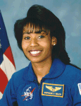

Lyndon B. Johnson Space Center
Houston, Texas 77058
|
National Aeronautics and Space Administration Lyndon B. Johnson Space Center Houston, Texas 77058 |
 |
Biographical Data |
||
Stephanie D. Wilson
NASA Astronaut
PERSONAL DATA: Born in 1966 in Boston, Massachusetts. Enjoys snow skiing, music, stamp collecting and traveling.
EDUCATION: Graduated from Taconic High School, Pittsfield, Massachusetts, 1984. Bachelor of Science in Engineering Science from Harvard University, 1988. Master of Science in Aerospace Engineering from the University of Texas, 1992.
ORGANIZATIONS: The American Institute of Aeronautics and Astronautics (Associate Fellow); The Association of Space Explorers; The Society of Women Engineers; The Harvard University Board of Overseers (2007-2013); The Links Incorporated.
SPECIAL HONORS: Several group achievement and performance awards (1992 to 2008); Young Outstanding Texas Exes Award (2005); Harvard Foundation Scientist of the Year Award (2008); Harvard College Women’s Professional Achievement Award (2008); Honorary Doctorate of Science from Williams College (2011); NASA Space Flight Medal (2006, 2007, 2010); NASA Distinguished Service Medal (2009, 2011); Johnson Space Center Director’s Innovation Group Achievement Award (2013); Johnson Space Center Director Commendation Award (2013).
EXPERIENCE: After graduating from Harvard in 1988, Wilson worked two years for the former Martin Marietta Astronautics Group in Denver, Colorado. As a loads and dynamics engineer for Titan IV, Wilson was responsible for performing coupled loads analyses for the launch vehicle and payloads during flight events. Wilson left Martin Marietta in 1990 to attend graduate school at the University of Texas at Austin. Her research, sponsored by NASA’s Langley Research Center through a NASA Graduate Student Researchers Fellowship, focused on the control and modeling of large, flexible space structures, ultimately culminating in a thesis comparing structural dynamics methodologies and controller designs. Following the completion of her graduate work, she began working for the Jet Propulsion Laboratory in Pasadena, California in 1992. As a member of the Attitude and Articulation Control Subsystem team for the Galileo spacecraft, Wilson was responsible for assessing attitude controller performance, science platform pointing accuracy, antenna pointing accuracy and spin rate accuracy. She worked in the areas of sequence development and testing as well. While at the Jet Propulsion Laboratory, Wilson also supported the Interferometery Technology Program as a member of the Integrated Modeling team, which was responsible for finite element modeling, controller design and software development.
NASA EXPERIENCE: Selected as an astronaut by NASA in April 1996. In August 1996, Wilson reported to NASA’s Johnson Space Center. She completed two years of training and evaluation and became qualified for flight assignment as a mission specialist. Wilson was initially assigned technical duties in the Astronaut Office Space Station branch to develop requirements for space station payload displays and procedures and to evaluate their user interfaces. She then served as a Capsule Communicator (CAPCOM) in the Astronaut Office CAPCOM branch, working in the Mission Control Center as a prime communicator with several space shuttle and space station crews. Following her work in mission control, Wilson was assigned technical duties involving the space shuttle main engines, external tank and solid rocket boosters in the Astronaut Office Space Shuttle branch. In November 2004, Wilson was assigned to STS-121. Following STS-121, she served in the Astronaut Office Robotics branch performing robotics procedure reviews and serving as a robotics mentor and instructor astronaut. In November 2006, Wilson was assigned to STS-120. Following STS-120 she was assigned joint duty in both the Astronaut Office Exploration and International Space Station branches. With respect to space station branch work, Wilson served as the Astronaut Office primary representative to the Generic Joint Operations Panel for space shuttle and space station issues. For the Exploration branch, she served as the Astronaut Office representative for the Orion Communications and Tracking System. In May 2009, Wilson was assigned to STS-131.
Following STS-131, within the Space Station Integration branch, she served as the Operations Products lead further developing crew efficiencies in operations products, and as the Payload lead interfacing with NASA’s Marshall Space Flight Center to resolve payload process, operations nomenclature and procedure issues. Wilson also served for two years as the Space Station Integration Branch Chief, where she was responsible for overseeing crew issues related to space station systems, payloads, operations products and software interfaces. As part of a unique opportunity in 2013, Wilson completed a nine-month detail to NASA’s Glenn Research Center as the Acting Chief of Program and Project Integration within the Spaceflight Systems Directorate. In this role she was responsible for overseeing the program, planning and control functions for Glenn’s spaceflight projects. Following her detail to Glenn, Wilson was assigned to the Space Station Operations branch as the lead Crew Support astronaut. Wilson has also served as a member of the 2009 and 2013 Astronaut Selection Boards. A veteran of three spaceflights, STS-121 in 2006, STS-120 in 2007 and STS-131 in 2010, Wilson has logged more than 42 days in space.
SPACEFLIGHT EXPERIENCE: STS-121 Discovery (July 4 through July 17, 2006) was a Return to Flight test mission and assembly flight to the International Space Station. During the 13-day flight, the crew of space shuttle Discovery tested new equipment and procedures that increase the safety of the space shuttle and repaired a rail car on the station. Wilson served as the robotic arm operator for vehicle inspection and for the installation of the “Leonardo” Multi-Purpose Logistics Module. She was also assigned as the loadmaster responsible for overseeing the transfer of more than 15,000 pounds of supplies and equipment to the space station. In addition, the crew delivered a new Expedition 13 crew member to the space station. The mission was accomplished in 12 days, 18 hours, 37 minutes and 54 seconds and produced never-before-seen, high-resolution images of the shuttle during and after its July 4th launch.
STS-120 Discovery (October 23 through November 7, 2007), also designated as flight 10A in the International Space Station assembly sequence, was launched from and returned to land at NASA’s Kennedy Space Center, Florida. STS-120 delivered the Node 2 “Harmony” module to the station, establishing the necessary capability for future international laboratories to be added to the space station. STS-120 also delivered an Expedition 16 crew member and returned with an Expedition 15 crew member. During ascent and entry, Wilson served as the flight engineer, assisting the commander and pilot with space shuttle systems. She was also assigned as the primary robotic arm operator for vehicle inspection and spacewalk support, helping to replace the S-band antenna and to relocate the P6 solar array from the Z1 truss to the end of the Integrated Truss Segment. During the deployment of the solar array, the array panels snagged and were damaged. Wilson was the primary robotic arm operator for the unplanned spacewalk that successfully repaired the solar array. The mission was accomplished in 238 orbits, traveling 6.2 million miles in 15 days, 2 hours and 23 minutes.
STS-131 Discovery (April 5 through April 20, 2010), a resupply mission to the International Space Station, was launched pre-dawn from Kennedy. Once docked to the space station, the crew delivered more than 27,000 pounds of hardware, supplies, experiments and equipment, including a tank full of ammonia coolant that required three spacewalks and robotics to install, new crew sleeping quarters, a window observation facility and a freezer for experiments. During the mission, Wilson was responsible for robotics for spacewalking support using the space station robotic arm and for robotic removal of the “Leonardo” Multi-Purpose Logistics Module from the payload bay of Discovery. For the return to Earth, Wilson robotically installed Leonardo, which was packed with more than 6,000 pounds of hardware, science results and used supplies, inside Discovery’s payload bay. The STS-131 mission was accomplished in 15 days, 2 hours, 47 minutes and 10 seconds and traveled 6,232,235 statute miles in 238 orbits.
JULY 2014